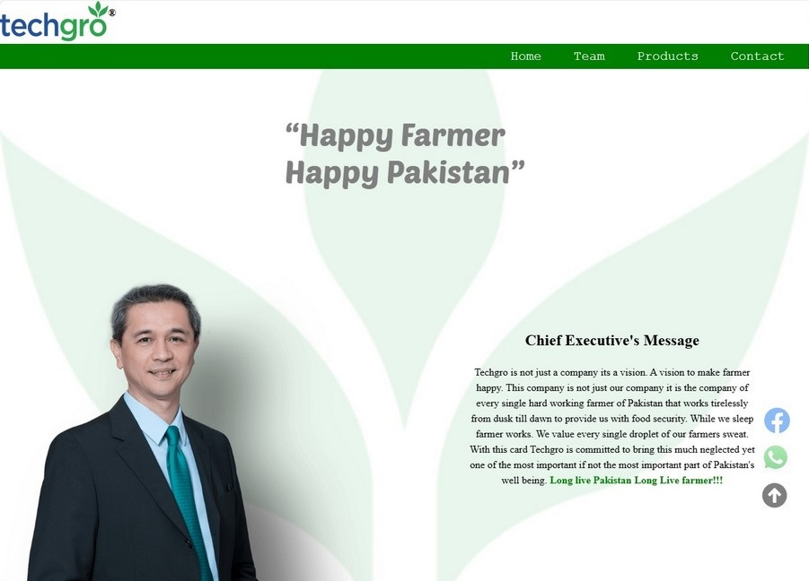
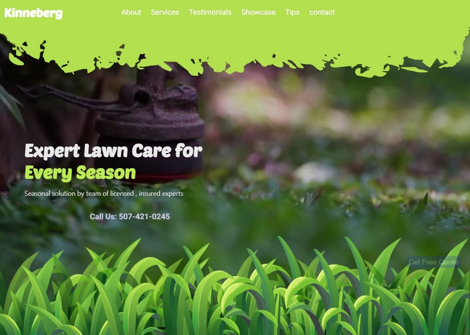
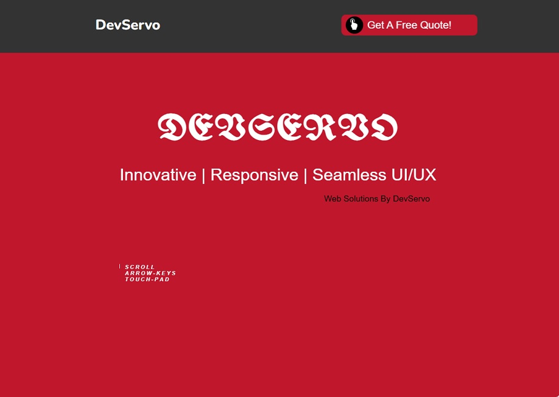
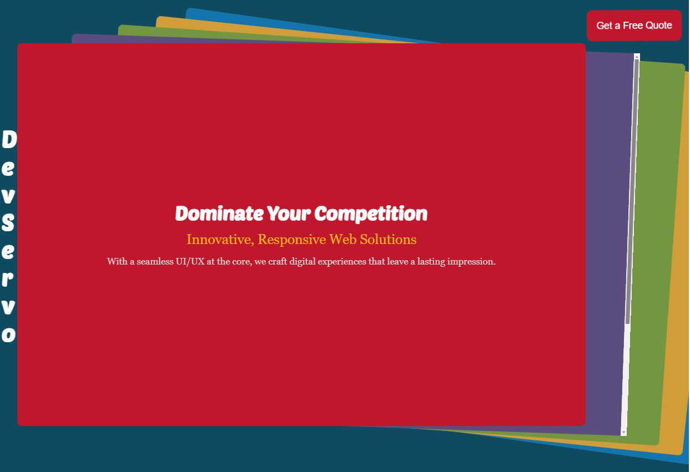

Portfolio
Techgro
Details:
Techgro is a micronutrient fertlizer company , one of the largest producers of WDG Sulfur in
Pakistan. This is a full stack website with PHP , MariaDB as backend and HTML5 CSS3 and Vanilla JS
for fronend. The website is fully responsive for portrait oriented screens and utilizes modern UI
elements
kinneberg
Details:
kinneberg is a Lawn care LLC company. The website is a lading page which is aimed at capturing
leads. It uses Vanilla JS, CSS33 and HTML5 and uses moden UI aesthetics. The page is fully
responsive for all portrait oriented screens.
DevServo
Details:
DevServo is my own website that is aimed to showscase my ability to make modern , unique out of the
box designs. It uses Vanilla JS and GSAP for Animations. It utilizes various DOM event to scroll
through different pages although it ian SPA.The website is fully responsive for all portrait
oriented screens
DevServo - Pageflow
Details:
This is another DevServo portfolio website utilizing pageflow theme. It uses Swiper JS, Vanilla JS ,
HTML5 CSS3. Its Modern and fully responsive for all portrait oriented screens
Graphic Design